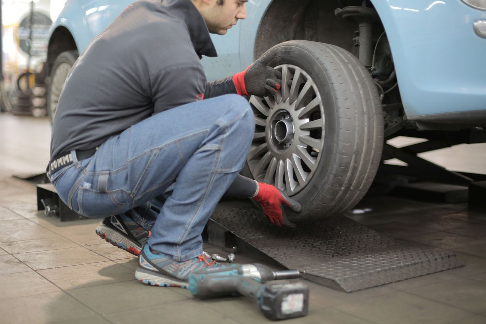

Сезонная смена шин
Диски до 22″, низкий профиль и Run Flat. Станки Tromellberg без металлических деталей в зоне контакта с диском.
Выберите услугу, радиус и удобный час — заявка уйдёт мастеру. До трёх машин одновременно, финишная балансировка, правка и аргонная сварка дисков.

Фото — иллюстрация (Pexels), не сотрудник «Фаворита»
В сезон переобувки запись только по телефону, а сайт выглядит как шаблон магазина: «Регистрация/Войти», новости 2013 года, цен на шиномонтаж нет — клиент звонит, чтобы просто узнать очередь.
Услуга, радиус, число колёс и удобный час — одной заявкой с телефона; цены на правку дисков и скидка 30% видны сразу.
Подсказывает требования к ошиповке и скидку при покупке шин или дисков, предлагает только свободные часы по красноярскому времени и отправляет заявку в Telegram.
✦Это концепт. С вашими фото и правками будет ещё лучше
Описание — с текущего сайта favorite-24.ru. Цены на шиномонтаж по радиусам на сайте не опубликованы — уточняются.
Диски до 22″, низкий профиль и Run Flat. Станки Tromellberg без металлических деталей в зоне контакта с диском.
«Гарантируем отсутствие вибраций». До трёх автомобилей одновременно.
Ремонт боковых порезов горячей вулканизацией, материалы БХЗ — около 2–3 часов. Ремонт проколов — X-tra seal.
Ремонтные шипы Теком 12 мм. Нужны заводские отверстия под шип, протектор от 6 мм, шине не больше 5 лет.
По договору, предоплата за сезон (около полугода), можно продлить на месяц-два. Стоимость уточняется.
Большая парковка, клиентская зона с Wi-Fi, оплата картой. В центре микрорайона Взлётка.
Цены — со страницы «Правка дисков» текущего сайта; итог зависит от повреждения, актуальность уточняется.
Аргонная сварка, частичная покраска в 7–8 стандартных цветов, гарантия на работу.
Отдельный пост по соседству, свой телефон и часы — по страницам текущего сайта.
Новый 3D-стенд. Диагностика развала-схождения — 600 ₽ (с главной страницы сайта); цена регулировки уточняется.
Бесплатно при покупке масла у них, замена фильтра — бесплатно. Castrol, Mobil, Motul, BP.
Подвеска, двигатель, тормоза, электрика — по записи.
СТО: Взлётная, 51б · +7 (391) 293-50-80 · 9:00–20:00 (на одной из страниц указано 9–23 — уточняется).
Цитаты — дословно с Яндекс Карт, без имён. Владелец отвечает на отзывы.
«Классная шиномонтажа, обслуживание оперативное, качество работы отличное, персонал отзывчивый подскажут, проконсультируют, каждый знает своё дело. Работа выполняется на 100. Буду всегда у них переобуваться.»Отзыв с Яндекс Карт
«Ремонтировал диск у парней. Все сделали качественно. Выправили, покрасили в цвет. Молодцы, рекомендую!»Отзыв с Яндекс Карт
«Самый адекватный качественный недорогой шиномонтаж ! И правка дисков у них тоже есть- очень даже всем доволен уже …лет 10 точно , может больше»Отзыв с Яндекс Карт
В рабочей версии в заявке сразу видно услугу, радиус и число колёс — мастер называет итог до приезда.
Шиносервис — ежедневно (по сайту 9:00–23:00, по Яндекс Картам 9:00–22:00 — в демо часы до 22:00); СТО на 51б — 9:00–20:00.
Почта: techshinarf@mail.ru. Можно оставить номер — по текущему сайту, сервис перезванивает сам.